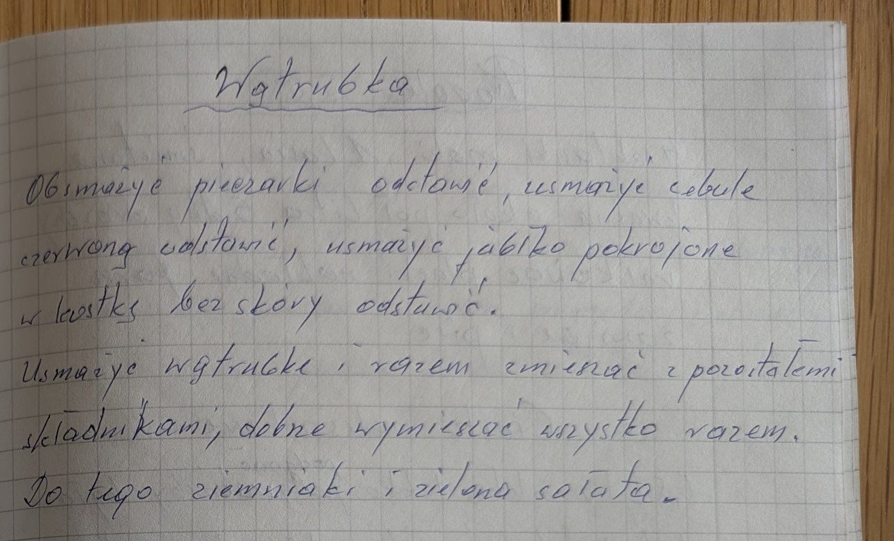

Wątróbka


Składniki
- wątróbka
- pieczarki
- czerwona cebula
- jabłko
Przygotowanie
- Obsmażyć pieczarki i odstawić.
- Usmażyć czerwoną cebulę i odstawić.
- Usmażyć jabłko pokrojone w kostkę, bez skóry, i odstawić.
- Usmażyć wątróbkę i dobrze wymieszać z pozostałymi składnikami.
- Podawać z ziemniakami i zieloną sałatą.
Oryginalny zapis
Wątróbka Obsmażyć pieczarki odstawić, usmażyć cebulę czerwoną odstawić, usmażyć jabłko pokrojone w kostkę bez skóry odstawić. Usmażyć wątróbkę i razem zmieszać z pozostałymi składnikami, dobrze wymieszać wszystko razem. Do tego ziemniaki i zielona sałata.